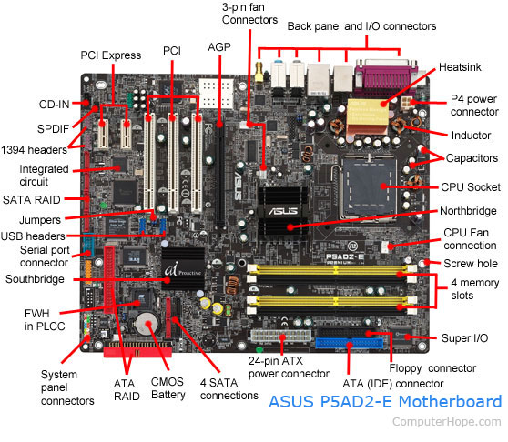
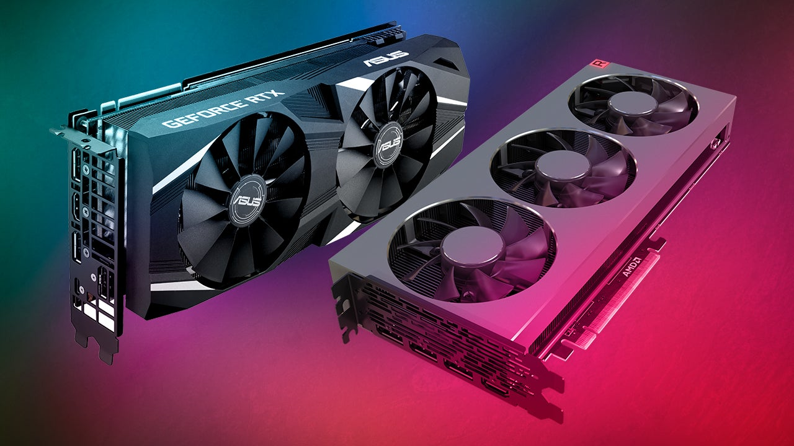

The Computer
Regardless of how knowlagable you are about computers there is always more to learn!
Central Processing Units
There is lots to learn about computers, but the main portion is not from that big green (normally) board inside the computer. All the parts in some way will connect to it though and the main component that does is the CPU (Central Processing Unit). This unit does many things to allow your computer to run as smooth as possible with no hick ups.
Use these tabs for the functions of the CPU
MotherBoard
Graphics
PINS
What do these small gold PINS do for this component? Here is a place where some of your questions may be answered. It says why some sockets on motherboards are different and how the pins on a differet branded cpu is different. Questions can be answered by profesionals
Here is all about the pins, Tom explains what they do and how to see if parts are compatable for example the cpu and motherboard. Here is where Tom talks
Whats Inside?
These chips may look small and probably somewhat weak but man do they ever do a lot. These things are much more complex than anyone could ever imagine. The stuff that is hiding in the small chips is unbelievable and very interesting. About Intels newest CPU's
Here they will go in depth of what is inside the chip and how everything works together. It gives some in depth look and diagrams so you can physically see how it will work. What is inside
Where is the CPU?
They are normally found right in the middle of the computer with a fan or water pumped cooler over top of it. They are also connected to the motherboard which is normally found inside the case in the middle of the computer. How to insert a CPU in a motherboard
More Interesting Facts!
The range and the development of these components is endless and in the future I expect many more upgrades to these components. For example in recent years there has been many upgrades of the cores and threads of the CPU's. Cores and Threads do a lot for the computer and really helps it to run efficently and allow you to run many applications all at the same time without it over heating. The CPU also needs to use a compound named Thermal Paste or Thermal Compound which is a metal that won't dry up but also won't hurt your chip and it allows to keep your CPU cooled with the help of a CPU Fan.
This site explains what multi cores and threads do and hyper threads- Federico Faggin Italian physicist Federico Faggin invented the first commercial CPU. It was the Intel 4004 released by Intel in 1971.
- CPU Stands for "Central Processing Unit." The CPU is the primary component of a computer that processes instructions. ... The CPU contains at least one processor, which is the actual chip inside the CPU that performs calculations.
- Types of CPU Single-core CPU. It is the oldest type of CPU which is available and employed in most of the personal and official computers. ... Dual-core CPU. It is a single CPU that comprises of two strong cores and functions like dual CPU acting like one. ... Quad-core CPU. ... Hexa Core processors. ... Octa-core processors. ... Deca-core processor.
All of the Connections
There are many ports to the MotherBoard such as 24 pin, 8 pin CPU power, hard-drive in, Graphic Card ins, power connectors, CPU Pins. More INFO.... This website gives brief descriptions on everythong computers but this is for Motherboards
Integrated Graphics
The integrated graphics comes from the motherboard and it just supporting its own graphics so it wouldn't need an extension component to allow it to display graphics on the screen. The integrated graphics are most commonly used in older work desktops and older laptops and now most laptops are merging into different ways to produce graphics such as the the following ways in the graphics section. Although they may not show windows graphics they must have it because if you want to enter the BIOS you need the graphics of the Motherboard to access it. What happens with integrated graphics
All In One Graphics
All In One Graphics comes from the CPU which than allows the computer to run off graphics put out by the CPU. It doesn't need the motherboard to do anything in graphics terms all it needs to do is give the CPU power. The CPU still does its normal things its just also able to produce graphics for the computer. We are now seeing these in more and more work computers every year and especially laptops.
Graphic Cards
Graphic Cards are now starting to be more popular every year. They have started to compress the graphic cards so they can not only fit in desktops but laptops as well. The graphic card is the strongest and best graphic intesity you can possibly get at the moment. In desktops they are much larger so they can have better cooling to allow it to run more efficent and not over heat like it may do if you're doing something very graphically intense in a laptop. Yes you may look at one of these things and think do I need one? I would ask you what do you use your computer for? If they said video editing, gaming, crypto mining I would say yes you would need one. But if you don't do these things I would say no it is not necessary because they are very expensive. You want to know more on GPU's?
